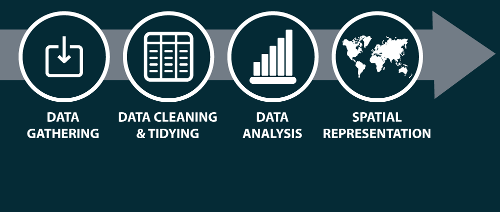
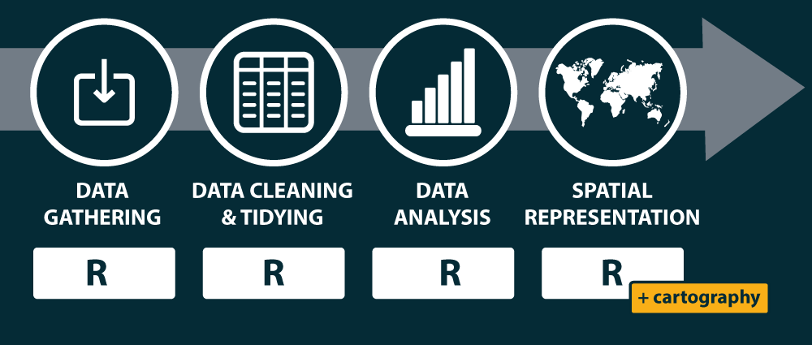
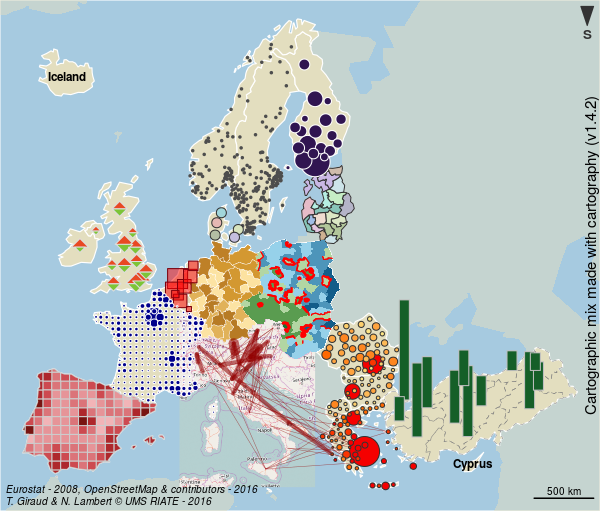

Reproducible Cartography: An Extension of the R Software for Thematic Mapping
T. Giraud & N. Lambert
July 6, 2017 - ICC 2017 - Washington DC, USA
“Science is infallible;
but scientists are always wrong.”
Anatole France, 1889
Reproducible Research
Sciences are based on the principle of reproducibility.
Reproducibility helps to assess the validity of studies.
It may be easier to reproduce studies in computer based sciences.
The Reproducibility Spectrum
 Peng, 2011
Peng, 2011
The main idea is to release studies along with data and computer code that support scientific findings.
Map Reproducibility ?
Maps are part of scientific studies and should be reproducible.

Map Reproducibility ?
- Keep traces of computations
- Share methods
- Publish transparent studies
- Update easily
- Work collectively
- Automatize tasks
- Combine analysis and representations
Map Reproducibility ?

Statistical maps production uses a wide range of software products and data formats.
Map Reproducibility ?
This diversity makes reproducibility difficult.
Map Reproducibility ?

We need a single tool to simplify the toolchain and ensure an easy reproducibility.
How ?
Pick an appropriate tool
R is a free software environment for statistical computing and graphics. It compiles and runs on a wide variety of UNIX platforms, Windows and MacOS.
Pick an appropriate tool
A large ecosystem of user-contributed extensions (packages)
A pretty IDE (RStudio)
Very good literate programming functionnalities (rmarkdown)
From a complex toolchain…
… to an unified workflow

cartography

Some simple maps
library(cartography)
# Load data
data(nuts2006)
# save map
png(filename = "img/map1.png", width = 600, height = 535, res = 100)
par(mar = c(0,0,1.2,0))
# Plot a background layers
plot(nuts0.spdf, border = NA, col = NA, bg = "#A6CAE0")
plot(world.spdf, col = "#E3DEBF", border = NA, add = TRUE)
plot(nuts0.spdf, col = "#D1914D", border = "white", lwd = 0.5,
add = TRUE)
# transform to thousand of inhabitants
nuts0.df$pop <- nuts0.df$pop2008/1000
# Plot the population
propSymbolsLayer(spdf = nuts0.spdf, df = nuts0.df,
inches = 0.2, lwd = 0.5,
var = "pop", legend.pos = "right",
legend.values.rnd = 0,
legend.title.txt =
"Population, 2008\n(thousands of inh.)",
legend.frame = F)
# Layout plot
layoutLayer(title = "propSymbolsLayer()",
author = "Package cartography v1.4.2",
sources = "Source: Eurostat, 2011",
frame = FALSE, scale = NULL, theme = "wine.pal",
north = TRUE)
dev.off()
# .Some simple maps

Some simple maps
# save map
png(filename = "img/map2.png", width = 600, height = 535, res = 100)
par(mar = c(0,0,1.2,0))
# compute the GDP per inhabitants
nuts0.df$gdpinh <- nuts0.df$gdppps2008 * 1e+06/nuts0.df$pop2008
# Plot a background layers
plot(nuts0.spdf, border = NA, col = NA, bg = "#A6CAE0")
plot(world.spdf, col = "#E3DEBF", border = NA, add = TRUE)
# plot the gdp per inhabitant
choroLayer(spdf = nuts0.spdf, df = nuts0.df, var = "gdpinh",
col = carto.pal(pal1 = "green.pal", n1 = 4),
method = "quantile", nclass = 4, border = "white",
lwd = 0.5, legend.pos = "right",
legend.title.txt = "GDP per inh., 2008\n(euros)", add = T)
layoutLayer(title = "choroLayer()",
author = "Package cartography v1.4.2",
sources = "Source: Eurostat, 2011",
frame = FALSE, scale = NULL, theme = "green.pal",
north = FALSE)
dev.off()
# .Some simple maps

Some simple maps
# save map
png(filename = "img/map3.png", width = 600, height = 535, res = 100)
par(mar = c(0,0,1.2,0))
# Plot a background layers
plot(nuts0.spdf, border = NA, col = NA, bg = "#A6CAE0")
plot(world.spdf, col = "#E3DEBF", border = NA, add = TRUE)
# Plot the gdp per inhabitant
choroLayer(spdf = nuts0.spdf, df = nuts0.df, var = "gdpinh",
col = carto.pal(pal1 = "sand.pal",
n1 = 4), method = "quantile",
nclass = 4, border = "white", lwd = 0.5,
legend.pos = "right",
legend.title.txt = "GDP per inh., 2008\n(euros)", add = T)
# Plot the population
propSymbolsLayer(spdf = nuts0.spdf, df = nuts0.df,
inches = 0.2, lwd = 1.25,
var = "pop", col = NA, border = "#940000",
legend.pos = "topright", legend.values.rnd = 0,
legend.title.txt =
"Population, 2008\n(thousands of inh.)",
legend.frame = F)
# layout
layoutLayer(title = "propSymbolsLayer() + choroLayer()",
author = "Package cartography v1.4.2",
sources = "Source: Eurostat, 2011",
scale = NULL, theme = "sand.pal",
north = FALSE, frame = FALSE)
dev.off()
# .Some simple maps

Some simple maps
# save map
png(filename = "img/map4.png", width = 600, height = 535, res = 100)
par(mar = c(0,0,1.2,0))
# Plot a background layers
plot(nuts0.spdf, border = NA, col = NA, bg = "#A6CAE0")
plot(world.spdf, col = "#E3DEBF", border = NA, add = TRUE)
plot(nuts0.spdf, col = "#EAE797", border = "white", lwd = 0.5,
add = TRUE)
# Plot symbols with choropleth coloration
propSymbolsChoroLayer(spdf = nuts0.spdf, df = nuts0.df,
var = "pop", inches = 0.3,
var2 = "gdpinh",
col = carto.pal(pal1 = "blue.pal", n1 = 4),
symbols = "square",
method = "quantile", nclass = 4,
border = "grey50",
lwd = 0.5, legend.var.pos = "topright",
legend.var.values.rnd = 0,
legend.var.style = "e",
legend.var2.pos = "right",
legend.var2.values.rnd = 0,
legend.var.title.txt =
"Population, 2008\n(thousands of inh.)",
legend.var2.title.txt =
"GDP per inh., 2008\n(euros)")
# layout
layoutLayer(title = "propSymbolsChoroLayer()",
author = "Package cartography v1.4.2",
sources = "Source: Eurostat, 2011",
frame = FALSE,
theme = "blue.pal", scale = 500, north = FALSE)
dev.off()
# .Some simple maps

Gridded Map
# Create a grid layer
mygrid <- getGridLayer(spdf = nuts3.spdf, cellsize = 1e+05,
type = "hexagonal")
# Compute data for the grid layer
df1 <- getGridData(x = mygrid, df = nuts3.df, var = "pop2008")
df2 <- getGridData(x = mygrid, df = nuts3.df, var = "pop1999")
# Compute the compound annual growth rate
df1$cagr <- (((df1$pop2008/df2$pop1999)^(1/9)) - 1) * 100
v <- getBreaks(v = df1$cagr, method = "quantile", nclass = 10)
v[5] <- 0
# set a color palette
cols <- c("#f18b61", "#f7b48c", "#f3d9b7", "#f1eccd",
"#c0dec2", "#91caa4", "#63b285", "#329966",
"#26734d", "#1a4c33")
# save the map in png format
png(filename = "img/map5.png", width = 600, height = 535, res = 100)
par(mar = c(0, 0, 1.2, 0))
# Plot a background layers
plot(nuts0.spdf, border = NA, col = NA, bg = "#A6CAE0")
plot(world.spdf, col = "#CCCCCC", border = NA, add = TRUE)
# plot the choropleth grid
choroLayer(spdf = mygrid$spdf, df = df1, var = "cagr", add = TRUE,
col = cols, lwd = 0.6, border = "#FFFFFF60",
legend.pos = "right", breaks = v, legend.values.rnd = 2,
legend.title.txt = "Compound Annual\nGrowth Rate")
# plot countries boundaries
plot(nuts0.spdf, add = T, col = NA, border = "#56514c", lwd = 0.7)
# Plot a layout
layoutLayer(title = "Demographic Trends, 1999-2008",
author = "Package cartography v1.4.2",
sources = "Source: Eurostat, 2011", frame = TRUE,
scale = 500, north = TRUE, theme = "taupe.pal")
dev.off()
# .Gridded Map

Discontinuities map
# Get a SpatialLinesDataFrame of countries borders
nuts2.contig <- getBorders(nuts2.spdf)
nuts2.df$gdpcap <- nuts2.df$gdppps2008/nuts2.df$pop2008 * 1e+06
# save the map in png format
png(filename = "img/map6.png", width = 600, height = 535, res = 100)
par(mar = c(0, 0, 1.2, 0))
# Plot a background layers
plot(nuts2.spdf, border = NA, col = NA, bg = "#A6CAE0")
plot(world.spdf, col = "#E3DEBF", border = NA, add = TRUE)
# Plot GDP per capita with a choropleth layer
choroLayer(spdf = nuts2.spdf, df = nuts2.df, var = "gdpcap",
border = "grey20", lwd = 0.2,
col = carto.pal(pal1 = "green.pal", n1 = 3, "sand.pal", 3),
method = "quantile", nclass = 6, add = TRUE,
legend.pos = "right", legend.values.rnd = -2,
legend.title.txt = "GDP per Capita\n(in euros)")
# Plot discontinuities
discLayer(spdf = nuts2.contig, df = nuts2.df,
var = "gdpcap", type = "rel",
method = "equal", nclass = 3, threshold = 0.4,
sizemin = 0.7, sizemax = 6, col = "red",
legend.values.rnd = 1, legend.pos = "topright", add = TRUE,
legend.title.txt =
"Discontinuities in \nGDP per Capita\n(relative)")
# Layout
layoutLayer(title = "Wealth Disparities in Europe, 2008",
author = "Package cartography v1.4.2",
sources = "Source: Eurostat, 2011", frame = TRUE,
scale = 500, north = FALSE, theme = "grey.pal")
dev.off()
# .Discontinuities map

Isopleth map
# Create a grid layer
mygrid <- getGridLayer(spdf = nuts3.spdf, cellsize = 50000, type = "regular")
# transform gdp in euros
nuts3.df$gdp <- nuts3.df$gdppps2008 * 1e+06
# Compute data for the grid layer
df1 <- getGridData(x = mygrid, df = nuts3.df, var = "pop2008")
df2 <- getGridData(x = mygrid, df = nuts3.df, var = "gdp")
df1$gdp <- df2$gdp
# list of breaks
v <- c(2920, 5000, 10000, 15000, 20000, 23500, 30000, 35000, 40000, 42720)
# save the map to a png file
# save the map in png format
png(filename = "img/map7.png", width = 600, height = 535, res = 100)
par(mar = c(0, 0, 1.2, 0))
# Plot a background layers
plot(nuts0.spdf, border = NA, col = NA, bg = "#A6CAE0")
plot(world.spdf, col = "#E3DEBF", border = NA, add = TRUE)
# set a color palette
cols <- c(rev(carto.pal("green.pal", 5)), carto.pal("orange.pal", 4))
# compute & display the potential map
smoothLayer(spdf = mygrid$spdf, df = df1,
var = "gdp", var2 = "pop2008", breaks = v,
span = 1e+05, beta = 2, mask = nuts0.spdf,
resolution = 49000, col = cols,
legend.title.txt = "Potential\nGDP per capita\n(in euros)",
legend.values.rnd = -2,
border = "grey80", lwd = 0.5, add = T, legend.pos = "topright")
# plot Europe contour
plot(rgeos::gBuffer(nuts0.spdf, FALSE, 1), add = T, col = NA,
border = "grey50")
# plot a layout
layoutLayer(title = "Wealth Inequalities in Europe, 2008",
author = "Package cartography v1.4.2",
sources = "Source: Eurostat, 2011", frame = TRUE,
scale = 500, north = FALSE, theme = "sand.pal")
# plot a text on the map
text(x = 6271272, y = 3600000,
labels = "Distance function:\n- type = exponential\n- beta = 2\n- span = 100 km",
cex = 0.8, adj = 0, font = 3)
dev.off()
# .Isopleth map

Thank you
Thank you
Paper / Code / Slides
https://github.com/riatelab/ReproducibleCartography/
cartography
Github: https://github.com/riatelab/cartography
CRAN: https://cran.r-project.org/web/packages/cartography/
Blogs
neocarto: neocarto.hypotheses.org
rgeomatic: rgeomatic.hypotheses.org